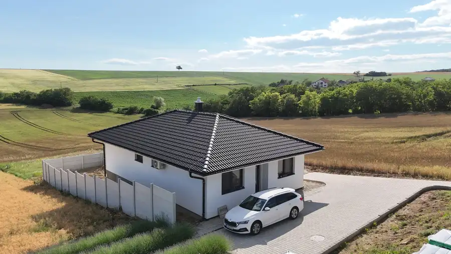
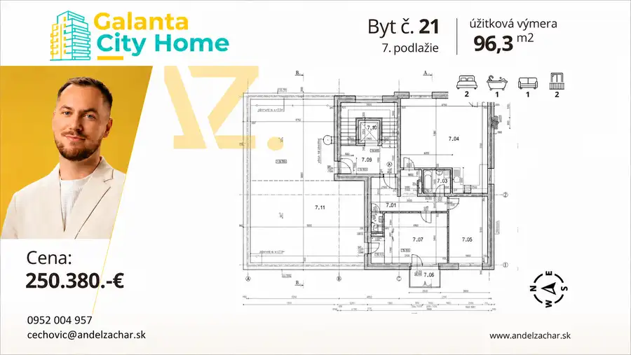

AZ. Kompletne zariadený 1,5-izbový byt s investičným potenciálom – Špačinská cesta, Trnava
Trnava
- Dispozícia2-izbový
- Plocha34 m²
- StavČiastočná rekonštrukcia
- VlastníctvoOsobné
O nehnuteľnosti
Hľadáte ideálne štartovacie bývanie bez ďalších starostí so zariaďovaním, alebo premýšľate nad kúpou nehnuteľnosti, ktorá vám začne okamžite zarábať? Ponúkame na predaj útulný, kompletne zariadený 1,5-izbový byt s výmerou 34m2 v jednej z najstrategickejších lokalít Trnavy – na Špačinskej ceste.Tento byt sa nachádza v tichom, len 3-poschodovom bytovom dome s komornou atmosférou, v ktorom je celkovo iba 8 bytov. To zaručuje maximálne súkromie, pokoj a dobré susedské vzťahy.Vďaka kombinácii strategickej polohy a faktu, že byt sa predáva kompletne zariadený, ide o dokonalú investičnú príležitosť pre krátkodobý prenájom.Blízkosť centra, okamžité napojenie na obchvat a MHD priamo pri dome sú presne tie atribúty, ktoré turisti aj obchodní cestujúci na platformách ako Booking či Airbnb vyhľadávajú najviac. Byt nevyžaduje žiadne ďalšie vstupné investície – od prvého dňa po kúpe ho môžete nahodiť na rezervačné portály a začať generovať stabilný pasívny príjem, často vyšší ako pri bežnom prenájme. Umiestnenie na prízemí je navyše veľkým plusom pre hostí s ťažkou batožinou.Absolútnym tromfom pre rezervačné portály sú dve klimatizácie, keďže ide o jeden z najvyhľadávanejších filtrov pri výbere ubytovania, ktorý vašich hostí presvedčí o rezervácii aj uprostred leta.Neváhajte a príďte si tento šikovný byt pozrieť osobne. Či už hľadáte útulný domov pre seba, alebo múdru investíciu, ktorá nestratí na hodnote, táto ponuka spĺňa oboje.Mesačné náklady: Veľmi priaznivé, len cca 120 € / 2 osoby, čo výrazne šetrí váš rodinný rozpočet alebo zvyšuje čistý zisk pri prenájme.Dispozícia:Lokalita:Lokalita, ktorá má všetko na dosahŠpačinská cesta je dlhodobo vyhľadávaná pre svoju mimoriadnu praktickosť. Bývanie tu vám ponúka: * Športový areál Slávia doslova na skok: Obrovský bonus pre milovníkov aktívneho životného štýlu. Pešo sa za pár minút dostanete k najväčšiemu športovému komplexu v meste, kde nájdete atletické dráhy, tenisové kurty, futbalové ihriská, workoutové zóny a kilometre bežeckých trás obklopených zeleňou. * Bleskovú dostupnosť do centra mesta (pešo, bicyklom aj autom). * Bezproblémové napojenie na obchvat, čo oceníte pri každodennom dochádzaní alebo cestovaní mimo Trnavu. * Zastávku MHD v bezprostrednej blízkosti – po meste sa tak dokážete pohybovať pohodlne aj bez auta. * Kompletnú občiansku vybavenosť v okolí (obchody, služby, kaviarne).Bližšie info na 0952 004 957 alebo cechovic@andelzachar.sk
Parametre
| Cena vrátane energií | Nie |
|---|---|
| Druh | 2 izbový byt |
| Dátum zverejnenia | 15. 6. 2026 |
| Energetický certifikát budovy | nie je |
| Orientácia | Západná |
| Počet izieb / miestností | 2 |
| Počet nadzemných podlaží | 3 |
| Rok výstavby | 1968 |
| Stav nehnuteľnosti | Čiastočná rekonštrukcia |
| Telekomunikácie | Optická sieť |
| Typ | Predaj |
| Typ konštrukcie | Zmiešaná |
| Umiestnenie | Prízemie |
| Vlastníctvo | Osobné |
| Úžitková plocha | 34 m² |
Kde to je


Mohlo by Vás zaujímať

DomNové10 235 000 €AZ. Novostavba 4i RD | Výhľad na polia a kopce | Pozemok 500 m² | Pastuchov Pastuchov 91 m² Realitná kancelária Andel & Zachar Vám ponúka na predaj moderný 4-izbový rodinný dom v obci Pastuchov, len 7 minút od mesta Hlohovec.Táto…
BytNové9 250 380 €AZ. Exkluzívny 3-izbový penthouse 96 m² s obrovskou 96 m² terasou – Galanta City Home Galanta 2-izbový96 m²7. podlažie Predstavujeme Vám výnimočnú ponuku prémiového 3-izbového bytu, ktorý spĺňa tie najvyššie nároky na moderné, vzdušné a nadštandardné bývanie. Byt sa… PozemokNové10
70 560 €AZ. Stavebný pozemok so sieťami - 504m2 - Veselé
Piešťany
550 m²
Ponúkame na predaj stavebný pozemok s inžinierskymi sieťami v projekte REZIDENCIA VESELÉ s výmerou 504m2.Pozemok disponuje: * voda * elektrina *…
PozemokNové10
70 560 €AZ. Stavebný pozemok so sieťami - 504m2 - Veselé
Piešťany
550 m²
Ponúkame na predaj stavebný pozemok s inžinierskymi sieťami v projekte REZIDENCIA VESELÉ s výmerou 504m2.Pozemok disponuje: * voda * elektrina *…